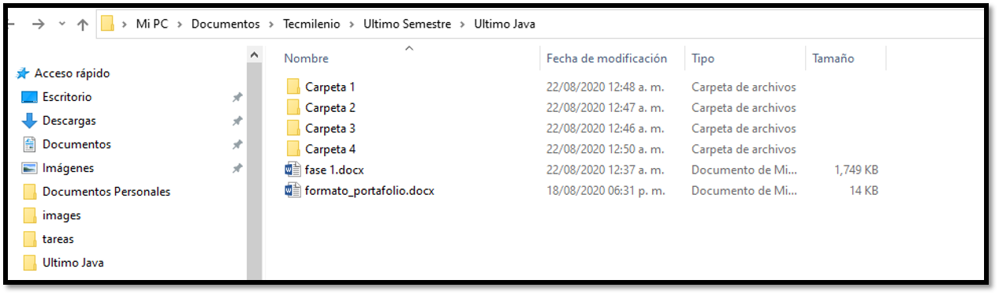
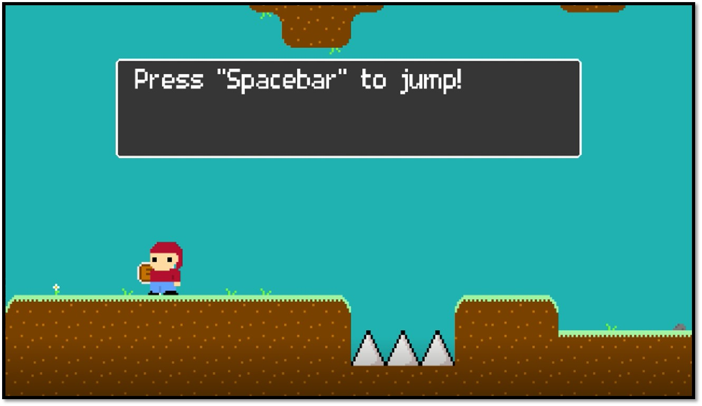

Participación en CIASPE, una ONG que fortalece la autogestión de comunidades, através de prácticas agro-ecológicas y estrategias integrales de vida sustentable.
 Se realizará una selección de evidencias para construir un portafolio digital y posteriormente se hará una reflexión sobre el aprendizaje obtenido durante el certificado. Es muy importante tener en mente, que realizar un buen proyecto con resultados positivos ayuda a robustecer el portafolio, y ser más útil más adelante al momento de buscar un empleo en la Industria.
Se realizará una selección de evidencias para construir un portafolio digital y posteriormente se hará una reflexión sobre el aprendizaje obtenido durante el certificado. Es muy importante tener en mente, que realizar un buen proyecto con resultados positivos ayuda a robustecer el portafolio, y ser más útil más adelante al momento de buscar un empleo en la Industria.
A continuación, estarán las ligas para ver todos los archivos relacionados a las tareas que se vayan pidiendo. Cabe mencionar, que no podré subir todas las carpetas con todas las tareas para ejemplificar mi avance personal, puesto que Github solo permite hostear hasta 100mb.
En este espacio subiré, capturas de pantallas y estaré subiendo los trabajos conforme se vaya siendo necesario subirlos. Si es necesario, también subiré clips de video y snippets de código. El apartado para revisar este contenido estará en el menú de navegación del lado izquierdo. Mientras tanto, dejo también, una liga de wetransfer con archivos de mis proyectos previos: https://we.tl/t-nbqA3819Ab 
Participación en CIASPE, una ONG que fortalece la autogestión de comunidades, através de prácticas agro-ecológicas y estrategias integrales de vida sustentable.

Gusto por la producción musical.